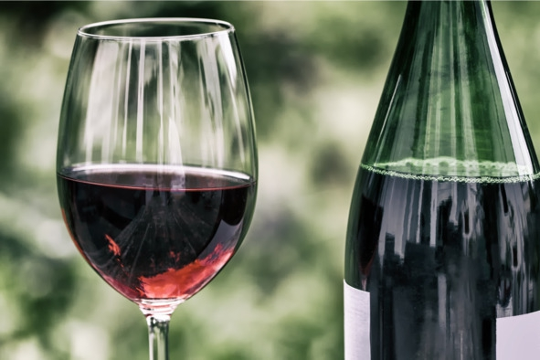
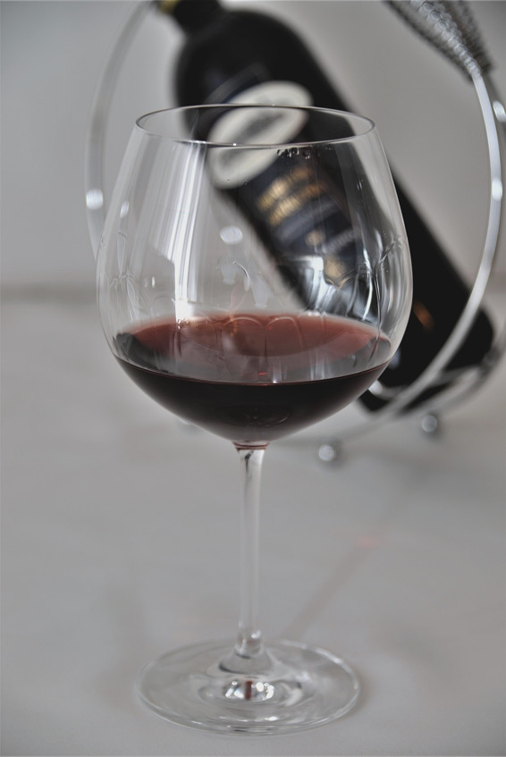
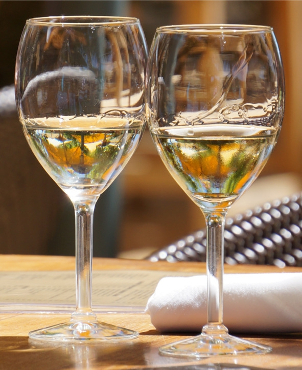
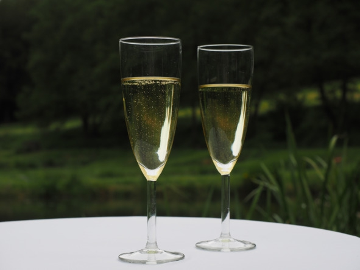

О культуре пития .. Как правильно пить вино.


Чтобы насладиться вкусом вина, нужно правильно подобрать бокалы, температуру и закуску.
Выбор бокалов
Под каждый сорт вина разработана своя форма бокала, хорошо раскрывающая органолептические свойства. Форма имеет не только эстетическое значение, но и позволяет почувствовать напиток в полной мере, оценить все его достоинства. От диаметра ободка зависит, насколько сильно будет концентрироваться аромат на выходе из бокала. Чем меньше диаметр, тем выше будет концентрация аромата. От высоты чаши зависит насыщение вина кислородом.
Бокалы для красного вина бывают двух типов: «Бордо» и «Бургундия». Самым распространенным типом является «Бордо». Эти бокалы можно использовать ежедневно, наливая в них любые красные вина. Чаша должна иметь объем не менее 600 мл, иначе некоторые богатые красные вина не полностью раскроют аромат.

«Бордо»
Бокалы типа «Бургундия» идеально подходят для вин с умеренно выраженными танинами и высокой кислотностью. Объем бургундских бокалов обычно составляет 700—750 мл, а форма чаши напоминает шар, который еще называют «баллоном». Зачастую этот вид бокалов используют дегустаторы-профессионалы, так как с их помощью можно быстро определить слабость вина или его непрочную структуру, то есть низкое качество.

«Бургундия»
Бокалы для белого вина по форме напоминают тип «Бордо», но имеют меньший объем (до 350 мл). Они позволяют сохранить оптимальную температуру напитка. Из маленького бокала вино пьют быстрее, и оно не успевает нагреться (температура подачи белых вин обычно ниже, чем красных).

Для белого вина
Бокалы для шампанского и других игристых вин имеют вытянутую форму, называемую «Флюте». Для шампанского идеально подходит бокал с узким горлышком, имеющий небольшое углубление на дне своей чашечки, это делает пузырьки более устойчивыми.

Для шампанского
Винные бокалы должны быть абсолютно прозрачными и насухо вытертыми, иначе цвет вина исказится. Чем тоньше стекло, тем удобнее и приятнее пить вино. Во время дегустации бокал наполняют максимум на 2/3 объема и держат только за ножку, чтобы не влиять на температуру.
Температура
Отвечает за полное раскрытие ароматического букета и первый вкус. Зачастую производители указывают рекомендуемый температурный диапазон. Если на этикетке информации нет, оптимальная температура подачи:
– молодых (1—2 года выдержки) красных вин – 13—15° C;
– выдержанных красных вин со сложной структурой – 15—17° C;
– белых сухих, розовых, игристых вин – 7—10° C;
– качественных белых и ликерных (сладких) вин – 9—12° C.
Правила сочетания блюд с вином
Подбор блюд зависит от традиций, сложившихся в той или иной национальной кухне. Единого мнения на этот счет нет. Универсальное правило: к винам со сложным ароматическим букетом и насыщенным вкусом подают самую простую закуску. Обратное утверждение тоже верно: изысканные блюда принято запивать простым (ординарным или столовым) вином, способствующим быстрому усвоению пищи.
Существует только три продукта, которые почти не влияют на вкус вина: белый хлеб, твердые сорта сыров без специй и фрукты. В тоже время существуют продукты, которые абсолютно не сочетаются с вином: орехи, уксус и сигареты. Уксус на некоторое время притупляет вкусовые рецепторы, орехи вяжут язык, а сигареты перебивают аромат вина.
Опытные рестораторы подбирают закуску, ориентируясь на вид вина. К дорогим белым сухим винам лучше подавать устриц, вареных раков, красную или черную икру, а также любые вторые рыбные блюда. Белые столовые вина сочетаются с мидиями, улитками, жареной рыбой, холодной свининой и телятиной. Сухие красные вина закусывают жареным мясом, нежными видами сыров и рыбой в соусе. Крепленые красные вина, содержащие свыше 12% об. спирта, хорошо пить с шашлыком, острыми блюдами и супами. Под столовые полусладкие и полусухие вина (красные и белые) можно поставить на стол жареное мясо, колбасы, овощи, грибы, блюда из дичи, запеканки, рулеты и пудинги. Из овощей лучше выбирать цветную капусту, спаржу или артишоки. Розовое сухое вино можно сочетать с хорошими сырокопчеными колбасами, жареной рыбой, белым мясом, курицей гриль и мягкими сырами.
Большинство производителей указывают на этикетке перечень блюд, с которыми сочетается их вино. Можно придерживаться этих рекомендаций, даже если они противоречат общепринятым нормам.
Зачем и как разбавлять вино водой
В Риме и Древней Греции людей, пивших неразбавленное вино, считали варварами. Впервые эту «дикость» увидели спартанцы при встрече со скифами. Впоследствии употребление чистого вина греки стали называть «пить по-скифски». В современных винодельческих странах Европы тоже разбавляют вино водой, но не так часто, как раньше.
В древности роль вина была несколько другой, чем сейчас. Например, у греков из-за нехватки питьевой воды именно вино являлось основным напитком для утоления жажды. Чистую воду позволяли пить только больным и детям, все остальные довольствовались разбавленным вином. Римляне хранили вино в загустевшем виде, так как их сосуды, амфоры, не могли обеспечить герметичность и полную сохранность жидкого вина. Перед употреблением желеобразную консистенцию приходилось разбавлять водой, это считалось венцом культуры. Жители Древнего Рима считали, что другие народы (в том числе и греки) пьют вино неразбавленным. Времена изменились, но традиция осталась, приобретая новые значения. Сейчас это целесообразно в следующих ситуациях:
1. Утоление жажды. Самая популярная причина. Идеально подходят белые виноградные вина, разбавленные в пропорции 1:3 или 1:4 (1 часть белого вина на 3—4 части воды).
2. Для снижения крепости и сладости. После правильного смешивания с водой вино пьется легко и не вызывает сильного опьянения. Также добавление воды нивелирует приторность вкуса.
3. В религиозных целях. Во время таинства Причастия православные священники дают прихожанам разбавленный кагор. Также путем смешивания с водой проверяется его качество. Для этого 1 часть кагора разбавляют 3 частями воды. Спустя 15 минут напиток пробуют. Качественный кагор должен сохранить свой цвет и аромат, суррогат сразу же мутнеет и начинает неприятно пахнуть.
Советы по разбавлению вин:
– использовать только кипяченую, родниковую или дистиллированную воду;
– объем вина должен быть меньше объема воды;
– по европейской традиции красные вина разбавляют горячей водой, белые – холодной;
– разбавленные крепленые вина полностью теряют вкус, все остальные виды можно разбавлять;
– воду наливают в вино, а не наоборот.